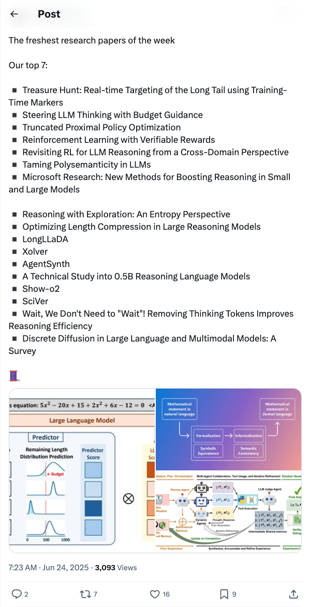
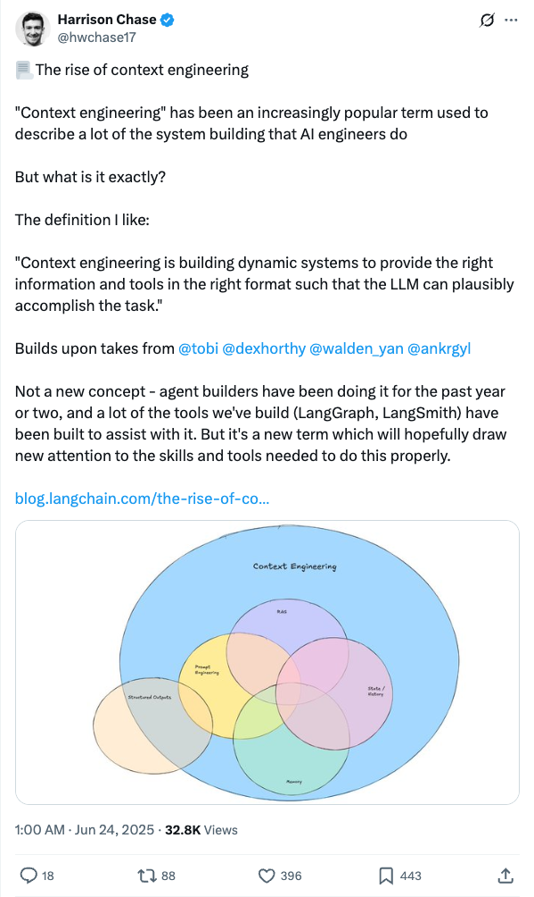

Twitter
TheTuringPost_This Week's Top AI Research Papers
Published: 2025-06-23T23:23:26.000Z

The TuringPost has released its top seven selected AI research papers of the week, covering cutting-edge topics such as LLM reasoning, reinforcement learning, budget guidance, polysemanticity handling, reasoning efficiency optimization, and agent technology. These studies aim to enhance the performance, efficiency, and verifiability of large language models, exploring new training and application paradigms, and offering valuable insights for AI researchers and developers.
SakanaAILabs_Sakana AI Introduces RLTs: Enhancing LLM Reasoning with Reinforcement Learning
Published: 2025-06-23T01:53:38.000Z

Sakana AI introduces Reinforcement-Learned Teachers (RLTs), revolutionizing how LLMs are taught reasoning. RLT models are trained via reinforcement learning to generate clear, step-by-step "explanations" for student models. A 7B RLT remarkably outperforms much larger LLMs in distilling and cold-starting student models on competitive and graduate-level reasoning tasks. It effectively distills even 32B student models, significantly enhancing efficiency in developing reasoning language models.
brianchristian_Large-Scale Analysis of LLM Reward Models Reveals Complexity and Biases
Published: 2025-06-23T15:32:03.000Z

Brian Christian conducted the first exhaustive large-scale analysis of 10 leading large language model reward models. The study revealed significant disagreements, base-model imprints, identity-term biases, and mere-exposure quirks among these models, which are considered the "moral compass" of LLMs. This research highlights the complex and potentially problematic internal workings of reward models.
Yoshua_Bengio_Warns of Sharply Rising AI-Driven Cyberattack Risks
Published: 2025-06-23T17:49:58.000Z

Renowned AI scientist Yoshua Bengio warns that as frontier AI systems increase in capability and agency, the risk of AI-driven cyberattacks will likely rise sharply. He emphasizes that tasks once performed by elite hackers may soon be carried out autonomously, demanding urgent attention. The tweet quotes Dawn Song's work, highlighting AI agents' breakthrough in cybersecurity, including discovering 15 zero-day vulnerabilities via CyberGym and solving real-world bug bounty tasks worth tens of thousands of dollars through BountyBench.
hwchase17_The Rise and Definition of Context Engineering
Published: 2025-06-23T17:00:50.000Z

Harrison Chase introduces "context engineering" as building dynamic systems to provide large language models with the right information and tools in the right format for task accomplishment. He notes that while not a new concept, the term's rise aims to draw attention to the skills and tools needed. He highlights LangChain's tools like LangGraph and LangSmith as instrumental in assisting AI engineers with this system building.
GaryMarcus_AI Development Dilemma: Brute Force Fails to Achieve AGI and SOTA
Published: 2025-06-23T13:55:00.000Z

Gary Marcus, quoting Carlos E. Perez, highlights that "brute force" alone is insufficient to achieve Artificial General Intelligence (AGI) or State-of-the-Art (SOTA) AI. The tweet suggests that Meta and X are currently in an AI crisis, having realized that their reliance on massive computation and data accumulation is not yielding significant progress. This indicates a growing "panic" within the AI field and an increasing reflection on current development methodologies.
wechat
Tencent's Hunyuan GameCraft: AIGC Reshapes Immersive AAA Games with Real-time Precise Control and Million-Scale Data Training
Published: 2025-06-23T23:45:34.000Z

Tencent has introduced the Hunyuan GameCraft framework, leveraging AIGC technology to redefine immersive AAA gaming experiences. This innovative framework achieves real-time precise control over in-game actions by unifying keyboard and mouse inputs into a shared camera representation space. It employs a hybrid historical conditional training strategy to autoregressively extend video sequences while preserving game scene information. To enhance inference efficiency and playability, the model incorporates distillation techniques, maintaining consistency over long sequences for real-time deployment in complex interactive environments. GameCraft is trained on a massive dataset comprising over one million AAA game recordings, further fine-tuned with a meticulously annotated synthetic dataset. This extensive training significantly improves visual fidelity, realism, and action controllability, demonstrating strong potential for natural control in third-person gaming scenarios.
Tencent Releases Hunyuan-GameCraft! From Static Images to Dynamic Game Worlds
Published: 2025-06-23T12:30:19.000Z

Tencent has unveiled Hunyuan-GameCraft, a novel technical framework designed to overcome existing challenges in dynamic expression, general adaptability, long-term consistency, and operational efficiency for interactive game video generation. This innovative system can generate complete game interaction videos from just a single image and a text prompt. It unifies keyboard and mouse operations, integrating movement commands and viewpoint controls into a shared camera representation space, enabling smooth transitions. The system precisely responds to interaction signals, automatically extending time-consistent and 3D-coherent video content while preserving historical scene information. Hunyuan-GameCraft is trained on data from over a hundred AAA titles, demonstrating superior performance in environments like Minecraft, particularly excelling in 3D consistency and scene coherence. This breakthrough offers new possibilities for immersive gaming experiences, although its current action space is primarily focused on open-world exploration.
Deep Dive | Former Instagram Co-founder, Anthropic CPO: A Truly Excellent AI Product Should Know When to Shut Up
Published: 2025-06-23T12:01:49.000Z

Anthropic CPO Mike Krieger, co-founder of Instagram, shared profound insights on his evolving perception of AI, shifting from viewing it merely as a tool to a "partner capable of original thought." He highlighted that AI now writes 70-90% of code, fundamentally reshaping traditional product development. Product managers are transforming into "system designers," directly involved in post-training models. Krieger emphasized that truly excellent AI products should "know when to shut up," acting as thought partners rather than undermining human judgment. Anthropic differentiates itself by focusing on serving developers and builders. The article further explores AI's rapid advancements, human-AI collaboration paradigms, the cultivation of future skills like curiosity and systemic thinking, the dramatic changes in engineering roles and team collaboration driven by AI, and the core value of product teams in the age of models (understandability design, strategic focus, and educating on possibilities).
Tencent Youtu Introduces Incentivizing Reasoning for Complex Instructions, Boosting Performance by 11.74%
Published: 2025-06-23T08:11:45.000Z

Addressing the persistent challenges Large Language Models (LLMs) face in understanding and executing complex instructions, Tencent Youtu's research team has introduced a systematic approach called "Incentivizing Reasoning." This novel method enhances LLMs' deep reasoning capabilities by meticulously decomposing complex instructions and integrating Reinforcement Learning (RL) with rule-driven reward mechanisms. Experimental results demonstrate that Incentivizing Reasoning significantly improves the performance of most LLMs when handling intricate commands. Notably, a 1.5B parameter LLM achieved an impressive 11.74% performance boost, making its capabilities comparable to those of an 8B parameter model. This approach also substantially outperforms conventional methods like Chain-of-Thought (CoT), which often exhibit superficial reasoning patterns. By fostering a more profound understanding and structured thinking, Incentivizing Reasoning offers a promising new avenue for enhancing LLM generalization abilities and instruction-following precision, particularly for smaller models, pushing the boundaries of what compact LLMs can achieve in complex reasoning tasks.
From Shaving Robots to Dual-Arm Mastery! This Embodied AI Unicorn Ignites a Hundred-Million-Dollar Funding Frenzy
Published: 2025-06-23T05:12:32.000Z
Flexiv, an embodied AI unicorn, recently secured a multi-hundred-million-dollar Series C funding round. The company has achieved significant breakthroughs in physical world interaction and perception-motion strategies with its pioneering adaptive robots. Through end-to-end model training, Flexiv's robots demonstrate highly precise dual-arm collaborative operations and complex tasks like robotic shaving. Flexiv's full-stack R&D and "general + humanoid" technological approach enable its robots to exhibit flexibility, anti-interference capabilities, easy deployment, and transferability. These robots are widely applied in challenging scenarios across industries such as automotive, 3C electronics, and healthcare, where traditional automation struggles. The company's general robot base platform and robust ecosystem are driving the industrialization of embodied AI, with thousands of units already delivered, positioning Flexiv as a leader in the field.
Reasoning Accuracy Drops 65.5%! Stanford, MIT, etc., Challenge AI's Logic Limits with 'Inequalities'
Published: 2025-06-23T05:12:32.000Z
A joint research team from Stanford, MIT, and UC Berkeley has introduced the IneqMath benchmark to rigorously evaluate large language models' (LLMs) mathematical reasoning capabilities, particularly with inequalities. This benchmark dissects inequality proofs into natural language tasks and employs an innovative LLM-as-Judge framework, featuring five independent "judges" to meticulously analyze each step of a model's reasoning chain. Evaluations across 29 mainstream LLMs, including GPT-4 and Claude, reveal a significant disparity: while final answer accuracy might be acceptable, the accuracy of the underlying reasoning process is remarkably low, dropping by up to 65.5%. This highlights a severe structural flaw in current LLMs' logical rigor, indicating that even correct answers do not guarantee sound reasoning. The research team has launched an open leaderboard to foster advancements in LLMs' rigorous mathematical argumentation.
GitHub
Welcome to Void.
Published: 2025-06-23T08:05:25Z

Void is an open-source alternative to Cursor, designed as a powerful code editor integrating AI agent capabilities. It enables users to leverage AI agents directly on their codebase, supporting checkpointing and visualization of code changes, and allowing for local deployment or hosting of various AI models. Emphasizing data privacy, Void communicates directly with AI providers without retaining user data. The project is a fork of VS Code, offering its full source code and actively encouraging community contributions.
Suna - Open Source Generalist AI Agent
Published: 2025-06-23T16:19:12Z

Suna is an open-source generalist AI agent designed to help users accomplish real-world tasks with ease through natural conversation. It integrates powerful capabilities such as seamless browser automation, file management, web crawling, command-line execution, website deployment, and integration with various APIs and services. Suna understands user needs and delivers results by harmonizing these capabilities to solve complex problems and automate workflows, making it an ideal digital companion for research, data analysis, and everyday challenges. Its architecture is built upon a Python/FastAPI backend, Next.js/React frontend, an isolated Agent Docker environment, and a Supabase database, supporting multiple LLM providers.
FULL v0, Cursor, Manus, Same.dev, Lovable, Devin, Replit Agent, Windsurf Agent, VSCode Agent, Dia Browser & Trae AI (And other Open Sourced) System Prompts, Tools & AI Models
Published: 2025-06-21T11:30:10Z

This GitHub repository compiles and open-sources system prompts and internal tools from various prominent AI tools and models, including v0, Cursor, Manus, Devin, and Replit Agent, offering over 7000 lines of insights into their structure and functionality. The project aims to help developers and security researchers deeply understand the inner workings of AI systems, while also emphasizing the critical importance of AI system security by offering audit services. It serves as a valuable resource for studying and analyzing the underlying mechanisms of AI agents.
Web Development for Beginners - A Curriculum
Published: 2025-05-29T17:34:21Z

This comprehensive 12-week web development curriculum, meticulously crafted by Microsoft Cloud Advocates, provides a robust foundation in JavaScript, CSS, and HTML. It features 24 immersive, hands-on lessons, guiding learners through the creation of diverse projects like interactive terrariums, practical browser extensions, and engaging space games. The pedagogical approach emphasizes active learning through integrated quizzes, collaborative discussions, and practical assignments, ensuring optimal skill development and knowledge retention. This project-based methodology is designed to bridge the gap between theoretical understanding and practical application, preparing students for real-world web development challenges. Moreover, the team has recently launched an exciting new curriculum focused on Generative AI for JavaScript, offering an advanced learning path for developers keen on exploring cutting-edge artificial intelligence applications within the web ecosystem. This expansion highlights the commitment to providing relevant and forward-thinking educational resources.
ComfyUI
Published: 2025-06-23T18:04:49Z
ComfyUI is a powerful and modular visual AI engine and application that enables users to design and execute advanced Stable Diffusion pipelines through a graph/nodes/flowchart-based interface. It supports a wide range of image, video, audio, and 3D models, including SDXL, Stable Cascade, SD3, SVD, Stable Audio, and Hunyuan3D. The platform features an asynchronous queue system, smart memory management, and various optimizations, allowing efficient operation even with low VRAM. ComfyUI facilitates the creation of complex AI workflows without coding, supporting diverse model formats and advanced functionalities like ControlNet, Inpainting, and model merging, making it a robust tool in the field of AI content generation.
huggingface
Drag-and-Drop LLMs: Zero-Shot Prompt-to-Weights
Published: 2025-06-19T15:38:21.000Z

Modern Parameter-Efficient Fine-Tuning (PEFT) methods such as low-rank
adaptation (LoRA) reduce the cost of customizing large language models (LLMs),
yet still require a separate optimization run for every downstream dataset. We
introduce Drag-and-Drop LLMs (\textit{DnD)}, a prompt-conditioned
parameter generator that eliminates per-task training by mapping a handful of
unlabeled task prompts directly to LoRA weight updates. A lightweight text
encoder distills each prompt batch into condition embeddings, which are then
transformed by a cascaded hyper-convolutional decoder into the full set of LoRA
matrices. Once trained in a diverse collection of prompt-checkpoint pairs, DnD
produces task-specific parameters in seconds, yielding i) up to
12,000times lower overhead than full fine-tuning, ii) average gains
up to 30\% in performance over the strongest training LoRAs on unseen
common-sense reasoning, math, coding, and multimodal benchmarks, and iii)
robust cross-domain generalization despite never seeing the target data or
labels. Our results demonstrate that prompt-conditioned parameter generation is
a viable alternative to gradient-based adaptation for rapidly specializing
LLMs. Our project is available at
https://jerryliang24.github.io/DnD{https://jerryliang24.github.io/DnD}.
VIKI-R: Coordinating Embodied Multi-Agent Cooperation via Reinforcement
Learning
Published: 2025-06-10T17:59:44.000Z

Coordinating multiple embodied agents in dynamic environments remains a core
challenge in artificial intelligence, requiring both perception-driven
reasoning and scalable cooperation strategies. While recent works have
leveraged large language models (LLMs) for multi-agent planning, a few have
begun to explore vision-language models (VLMs) for visual reasoning. However,
these VLM-based approaches remain limited in their support for diverse
embodiment types. In this work, we introduce VIKI-Bench, the first hierarchical
benchmark tailored for embodied multi-agent cooperation, featuring three
structured levels: agent activation, task planning, and trajectory perception.
VIKI-Bench includes diverse robot embodiments, multi-view visual observations,
and structured supervision signals to evaluate reasoning grounded in visual
inputs. To demonstrate the utility of VIKI-Bench, we propose VIKI-R, a
two-stage framework that fine-tunes a pretrained vision-language model (VLM)
using Chain-of-Thought annotated demonstrations, followed by reinforcement
learning under multi-level reward signals. Our extensive experiments show that
VIKI-R significantly outperforms baselines method across all task levels.
Furthermore, we show that reinforcement learning enables the emergence of
compositional cooperation patterns among heterogeneous agents. Together,
VIKI-Bench and VIKI-R offer a unified testbed and method for advancing
multi-agent, visual-driven cooperation in embodied AI systems.
Hunyuan-GameCraft: High-dynamic Interactive Game Video Generation with
Hybrid History Condition
Published: 2025-06-20T17:50:37.000Z

Recent advances in diffusion-based and controllable video generation have
enabled high-quality and temporally coherent video synthesis, laying the
groundwork for immersive interactive gaming experiences. However, current
methods face limitations in dynamics, generality, long-term consistency, and
efficiency, which limit the ability to create various gameplay videos. To
address these gaps, we introduce Hunyuan-GameCraft, a novel framework for
high-dynamic interactive video generation in game environments. To achieve
fine-grained action control, we unify standard keyboard and mouse inputs into a
shared camera representation space, facilitating smooth interpolation between
various camera and movement operations. Then we propose a hybrid
history-conditioned training strategy that extends video sequences
autoregressively while preserving game scene information. Additionally, to
enhance inference efficiency and playability, we achieve model distillation to
reduce computational overhead while maintaining consistency across long
temporal sequences, making it suitable for real-time deployment in complex
interactive environments. The model is trained on a large-scale dataset
comprising over one million gameplay recordings across over 100 AAA games,
ensuring broad coverage and diversity, then fine-tuned on a carefully annotated
synthetic dataset to enhance precision and control. The curated game scene data
significantly improves the visual fidelity, realism and action controllability.
Extensive experiments demonstrate that Hunyuan-GameCraft significantly
outperforms existing models, advancing the realism and playability of
interactive game video generation.
InfiniPot-V: Memory-Constrained KV Cache Compression for Streaming Video
Understanding
Published: 2025-06-18T02:22:14.000Z

Modern multimodal large language models (MLLMs) can reason over hour-long
video, yet their key-value (KV) cache grows linearly with time--quickly
exceeding the fixed memory of phones, AR glasses, and edge robots. Prior
compression schemes either assume the whole video and user query are available
offline or must first build the full cache, so memory still scales with stream
length. InfiniPot-V is the first training-free, query-agnostic framework that
enforces a hard, length-independent memory cap for streaming video
understanding. During video encoding it monitors the cache and, once a user-set
threshold is reached, runs a lightweight compression pass that (i) removes
temporally redundant tokens via Temporal-axis Redundancy (TaR) metric and (ii)
keeps semantically significant tokens via Value-Norm (VaN) ranking. Across four
open-source MLLMs and four long-video and two streaming-video benchmarks,
InfiniPot-V cuts peak GPU memory by up to 94%, sustains real-time generation,
and matches or surpasses full-cache accuracy--even in multi-turn dialogues. By
dissolving the KV cache bottleneck without retraining or query knowledge,
InfiniPot-V closes the gap for on-device streaming video assistants.
Hunyuan3D 2.5: Towards High-Fidelity 3D Assets Generation with Ultimate
Details
Published: 2025-06-19T17:57:40.000Z

In this report, we present Hunyuan3D 2.5, a robust suite of 3D diffusion
models aimed at generating high-fidelity and detailed textured 3D assets.
Hunyuan3D 2.5 follows two-stages pipeline of its previous version Hunyuan3D
2.0, while demonstrating substantial advancements in both shape and texture
generation. In terms of shape generation, we introduce a new shape foundation
model -- LATTICE, which is trained with scaled high-quality datasets,
model-size, and compute. Our largest model reaches 10B parameters and generates
sharp and detailed 3D shape with precise image-3D following while keeping mesh
surface clean and smooth, significantly closing the gap between generated and
handcrafted 3D shapes. In terms of texture generation, it is upgraded with
phyiscal-based rendering (PBR) via a novel multi-view architecture extended
from Hunyuan3D 2.0 Paint model. Our extensive evaluation shows that Hunyuan3D
2.5 significantly outperforms previous methods in both shape and end-to-end
texture generation.
MEXA: Towards General Multimodal Reasoning with Dynamic Multi-Expert
Aggregation
Published: 2025-06-20T16:14:13.000Z

Combining pre-trained expert models offers substantial potential for scalable
multimodal reasoning, but building a unified framework remains challenging due
to the increasing diversity of input modalities and task complexity. For
instance, medical diagnosis requires precise reasoning over structured clinical
tables, while financial forecasting depends on interpreting plot-based data to
make informed predictions. To tackle this challenge, we introduce MEXA, a
training-free framework that performs modality- and task-aware aggregation of
multiple expert models to enable effective multimodal reasoning across diverse
and distinct domains. MEXA dynamically selects expert models based on the input
modality and the task-specific reasoning demands (i.e., skills). Each expert
model, specialized in a modality task pair, generates interpretable textual
reasoning outputs. MEXA then aggregates and reasons over these outputs using a
Large Reasoning Model (LRM) to produce the final answer. This modular design
allows flexible and transparent multimodal reasoning across diverse domains
without additional training overhead. We extensively evaluate our approach on
diverse multimodal benchmarks, including Video Reasoning, Audio Reasoning, 3D
Understanding, and Medical QA. MEXA consistently delivers performance
improvements over strong multimodal baselines, highlighting the effectiveness
and broad applicability of our expert-driven selection and aggregation in
diverse multimodal reasoning tasks.